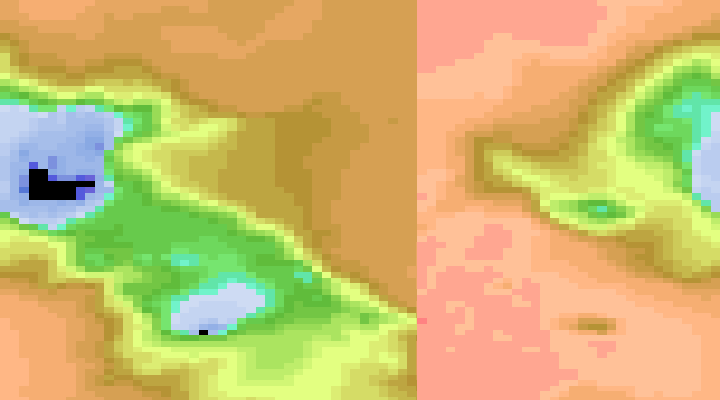

NEMOSIM - Cook book (5)¶
Limited area views and models¶
The examples so far have concentrated on producing images of or from global model datasets. This section demonstrates some of the options for producing limited area views; either from global datasets or from regional model output.
1. Limited area views from global datasets¶
Producing a limited area view from a larger dataset has been demonstrated previously by
employing the pan and zoom options of the orthogonal projection. However, a similar result
can also be achieved with the default, uniform long-lat projection by specifying the
bounding coordinates of the region of interest. These bounds are supplied as longitude
latitude pairs to the -sw and -ne options. As the names suggest, these options
specify the lower left (-sw) corners and upper right (-ne) corners of the bounding
rectangle in long-lat space. Because nemosim was originally developed with global
models in mind, an additional option: -no_offset may be required to disable some
assumptions about the longitudinal cyclicity of the data. For example, an attempt to
produce a regional view of the bathymetry around the Kerguelen plateau (i.e. a similar
view to the earlier orthogonal example) such as:
./nemosim -f data/bathy_level.nc -d Bathy_level -o example14a.png \
-sw 60. -55. -ne 79. -44.5 -nomask -show
doesn’t quite produce the expected result:
{kind=link}
Adding the -no_offset option fixes this:
./nemosim -as example14a.png -o example14b.png -no_offset
{kind=link}
Note regions that straddle the Greenwich Meridion can be produced from suitable sources
by specifying -ne longitude values greater than 360.
2. Producing images from regional datasets¶
NEMO is often used for regional studies and, with care, nemosim can be used to produce
images from regional model output. To demonstrate this some example data is provided from
the Atlantic Margin Model at 1 minute resolution (AMM60). The data provided are for a
single SST field which is sufficient to demonstrate the capabilities. Bear in mind,
though, that nemosim merely extracts a slice through the depth dimension for plotting.
Since many regional models are run with sigma-style vertical coordinates, it may be
necessary to introduce a preprocessing step if the intention is to plot a constant depth
surface away from the sea surface.
Firstly, try the default settings with the new data:
./nemosim -f data/AMM60_sst.nc -d sst -o example15a.png -show -nomask -np 4
{kind=link}
which does little more than demonstrate the default assumptions for global data. The plotted patch can be moved around by repositioning the central longitude line. For example:
./nemosim -as example15a.png -o example15b.png -cenl 90.
{kind=link}
but to reduce the blank areas we need to specify the bounding region. Suitable values can be obtained by scanning the nav_lon and nav_lat fields in the dataset. This almost works:
./nemosim -as example15a.png -o example15c.png -sw 335. 39.5 -ne 377.5 65.5
{kind=link}
but suffers from the cyclic assumptions (check the top left-hand corner). Note that by
setting the bounding region, nemosim has entered a non-global mode where points
outside the data domain are set to the alternative background colour (default gray). This
reveals the shape of the data domain with curvilinear boundaries in the uniform long-lat
projection. Adding the -no_offset option produces the first clear and complete result
from the regional model:
./nemosim -as example15c.png -o example15d.png -no_offset
{kind=link}
Finally, changing the aspect ratio produces a more natural result:
./nemosim -as example15d.png -o example15e.png -r 700 600
{kind=link}
3. Cropping by reducing the regional box¶
When producing images for purposes such as animation sequences, it is desirable to have images with straighter edges. One simple way the achieve this is to set a bounding region wholly contained within the data domain, for example:
./nemosim -f data/AMM60_sst.nc -d sst -o example16.png -show \
-nomask -sw 343.35 41.00 -ne 367. 63.45 -r 452 600 \
-no_offset -np 4
{kind=link}
which has the desired effect but, of course, truncates some of the domain.
4 Using the orthogonal projection¶
There is a better alternative because, in the case of the AMM60 domain, the area appears nearly rectangular when viewed using the orthogonal projection. This may not be immediately apparent so it is useful to document the steps taken from the default setting to reach the final view. Firstly, acitivate the orthogonal projection in a square image:
./nemosim -f data/AMM60_sst.nc -d sst -o example17a.png -nomask \
-r 600 600 -ortho -show -np 4
{kind=link}
Now centre the image on the centre of the data domain using the first two Euler angles:
./nemosim -as example17a.png -o example17b.png -eu1 356. -eu2 53.
{kind=link}
Next use the vmask option to set the land points (which have the value 0.0) to gray:
./nemosim -as example17b.png -o example17c.png -vmask 100. 0.0
{kind=link}
Now use the zoom option (-gsize) to almost fill the image area with the data domain.
Because of the shape of the data domain, the best result is obtained with a slightly
rectangular canvas:
./nemosim -as example17c.png -o example17d.png -r 600 720 -gsize 30
{kind=link}
At this stage it is obvious that a slight twist around the third axis will give a more even border around the data domain:
./nemosim -as example17d.png -o example17e.png -eu3 -1.
{kind=link}
With these settings as a basis we can add the dressing and by exercising fine control over font sizes and placements produce a complete image suitable for animation purposes:
./nemosim -as example17e.png -o example17f.png -spos 2 -bbg black \
-bfg white -stfs 14 -sfs 11 -margins 10 96 30 30 \
-grid 5 5 -limits 0 .0 18.0 -cs blue2red_b.pal \
-title "AMM60 Sea Surface Temperature" -stitle C \
-stjus 7 -stpos 612 750 \
-logo ./data/NOC_logo_white.png -lsize 120 60 \
-lpos 4 6 -t 1 -dateclk 60 468 600 18102012 -tfs 24
{kind=link}
The next section of the cookbook will use this last example as the basis for an animation sequence which demonstrates many of the advantages of nemosim.